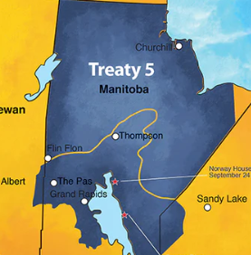

Treaty 5 is located mainly in upper Manitoba but also some parts of Ontario and Saskatchewan.
The communities that were in Treaty 5 were Cree, Metis and many more like Chemawawin, Berens River, Black River, Bloodvein, Cross Lake, etc.